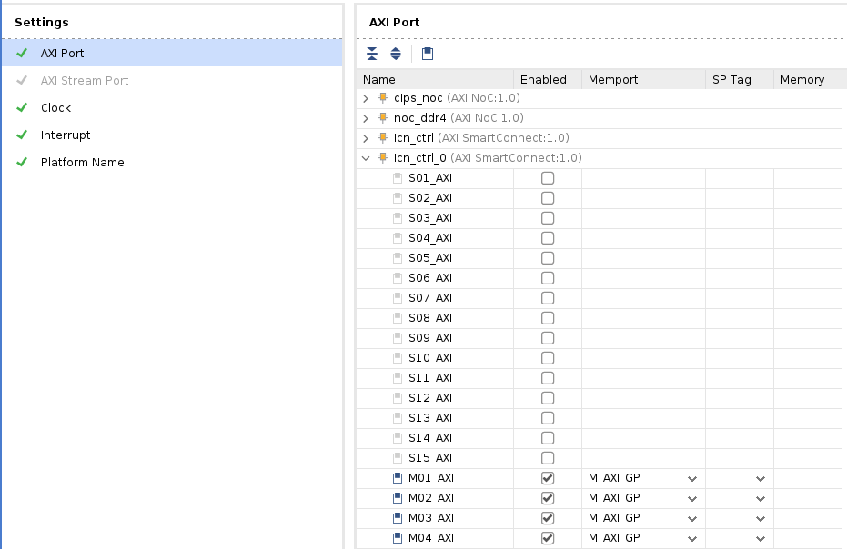
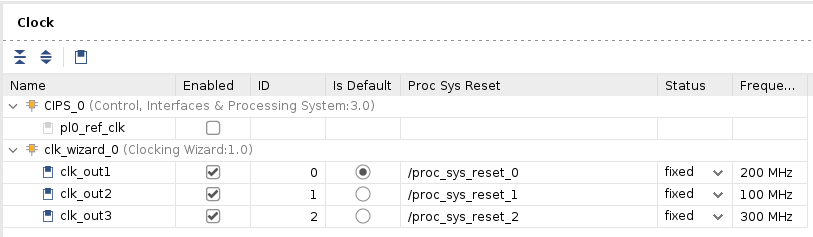
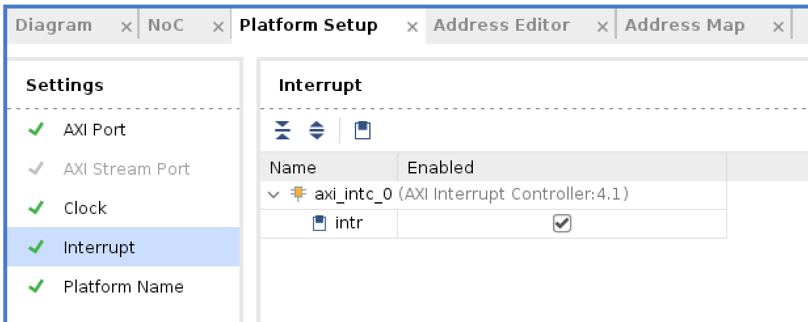
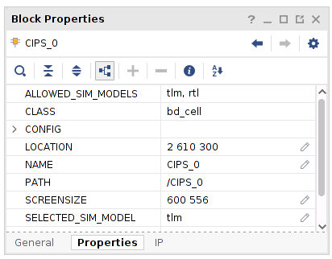
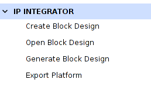
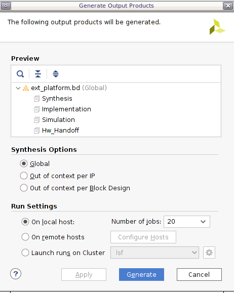

Versal カスタム プラットフォーム作成チュートリアル |
手順 1: Vitis プラットフォームのハードウェア設定¶
Versal エクステンシブル プラットフォームの例では、プラットフォームのプロパティを設定しています。この手順では、これらのプロパティを確認します。
カスタム ボード プラットフォームの場合は、これらのプロパティを手動で設定する必要があります。GUI または Tcl で設定できます。設定フローについては詳しく説明します。
Versal エクステンシブル プラットフォーム例のプラットフォーム設定¶
Vivado を起動して、手順 0 で作成したデザインを開いていない場合は開きます。
ブロック デザインが開いていることを確認します。開いていない場合、Flow Navigator で [Open Block Design] をクリックします。
(オプション) ブロック ダイアグラムの Tcl をエクスポートして、Tcl コマンドを確認するか、デザインを作成し直します。
[File] → [Export] → [Export Block Diagram] をクリックします。
Tcl ファイルのディレクトリを確認し、[OK] をクリックします。
エクスポートした Tcl ファイルを開きます。
[Platform Setup] ウィンドウをクリックします。
このタブが開いていない場合は、[Window] → [Platform Setup] クリックして開きます。
注記: [Platform Setup] タブが見つからない場合は、デザインが Vitis プラットフォーム プロジェクトであることを確認してください。[Project Manager] で [Settings] を開き、[Project Settings] → [General] タブの [Project is an extensible Vitis platform] をオンにします。
AXI ポート設定を確認します。
axi_noc_ddr4 で S01_AXI から S27_AXI がイネーブルになっているはずです。[SP Tag] は [DDR] に設定されています。

注記: Vitis エミュレーション自動スクリプトを実行するには、Versal プラットフォーム上の AXI スレーブ インターフェイスに、DDR または LPDDR のいずれかが SP タグに設定されている必要があります。
icn_ctrl_0 および icn_ctrl_1 では、M01_AXI から M15_AXI がイネーブルです。icn_ctrl では、M03_AXI および M04_AXI がイネーブルです。memport は M_AXI_GP に設定されています。[SP Tag] は空です。これらのポートは、PL カーネルを制御する AXI マスター インターフェイスを提供します。ブロック ダイアグラムでは、AXI SmartConnect IP にロードが必要なので、icn_ctrl_0 および icn_ctrl_1 は AXI Verification IP に接続します。ここでは、AXI Verification IP をダミーとして使用します。

注記: AXI マスターの [SP Tag] は何の効果もありません。
クロック設定を確認します。
[Clock] タブでは、clk_wizard_0 から clk_out1、clk_out2、clk_out3 が id {0,1,2}、周波数 {200MHz, 100MHz, 300MHz} でイネーブルになっています。
clk_out1 がデフォルトのクロックです。リンク設定でクロックが指定されていない場合、v++ リンカーはこのクロックを使用してカーネルを接続します。
[Proc Sys Reset] プロパティは、各クロックに割り当てられた同期リセット信号に設定されます。

[Interrupt] タブを確認します。
[Interrupt] タブでは、xlconcat の In0 から In31 ポートがオンです。

シミュレーション モデルの確認¶
Versal エクステンシブル プラットフォームの例では、各 IP の類似モデルが適切に設定されています。このセッションでは、その設定を確認します。ブロック デザインをご自身で作成した場合は、プラットフォームでエミュレーションを実行する前に、これらの設定が適用されていることを確認してください。
ブロック デザインのブロックの中には、複数タイプのシミュレーション モデルを含むものもあります。Vitis エミュレーションでは、SystemC TLM (トランザクション レベルのモデリング) モデルが使用可能な場合、これらのブロックを使用する必要があります。TLM は、CIPS、NOC、および AI エンジンのデフォルトのシミュレーション モデルです。ハードウェアをエクスポートする前に、これらが正しいかどうかを確認してください。
CIPS シミュレーション モデルの設定を確認します。
Vivado GUI で、CIPS インスタンスを選択します。
[Block Properties] ウィンドウを確認します。
[Properties] タブには、ALLOWED_SIM_MODELS が
tlm,rtl、SELECTED_SIM_MODEL がtlmと表示されます。つまり、このブロックでは 2 つのタイプのシミュレーション モデルがサポートされます。このチュートリアルでは、tlmモデルを使用するように選択しました。

ブロック図で NOC および AI エンジンのシミュレーション モデル プロパティを確認します。
ハードウェア XSA のエクスポート¶
ブロック図を生成します。
Flow Navigator で [Generate Block Diagram] をクリックします。

[Synthesis Options] を [Global] にして、生成時間を短縮します。

[Generate] ボタンをクリックします。
注記: 合成のデフォルト オプションの [Out of context per IP] を使用すると、ブロック図の各 IP が合成されます。合成前の XSA は次の手順で使用するので、これらの IP を合成する必要はありません。
注記: このクリティカル警告は無視しても問題ありません。今後、この信号は Vitis で接続されるようになる予定です。

次のスクリプトを使用してハードウェア プラットフォームをエクスポートします。
[File] → [Export] → [Export Platform] をクリックします。これには、Flow Navigator で [IP Integrator] → [Export Platform]、または [Platform Setup] タブの下部にある [Export Platform] ボタンを使用することもできます。
[Export Hardware Platform] ページで [Next] をクリックします。
[Hardware] を選択します。シミュレーションをサポートしない IP がある場合は、ハードウェア XSA とハードウェア エミュレーション XSA をそれぞれ生成する必要があります。[Next] をクリックします。
DFX プラットフォームを作成するわけではないので、[Pre-synthesis] を選択します。[Next] をクリックします。
[Input Name] に VCK190_Custom_Platform と入力して [Next] をクリックします。
ファイル名を vck190_custom_hw にアップデートし、[Next] をクリックします。
サマリを確認します。[OK] をクリックします。
ハードウェア エミュレーション XSA のエクスポート¶
Vitis 2021.2 の変更では、XSCT でプラットフォームを作成する際に、ハードウェアとハードウェア エミュレーションごとに独自の XSA ファイルが必要です。2021.2 では、ハードウェアとハードウェア エミュレーションの両方のコンテンツを含む 1 つの XSA も引き続きサポートされますが、今後廃止される予定です。
注記: この単純なプロジェクトでは、同じハードウェアおよびハードウェア エミュレーション デザインを使用しましたが、ハードウェアおよびハードウェア エミュレーションに異なる Vivado デザインを使用することもできます。プラットフォーム開発者は、2 つのデザインを論理的に同一に保つ必要があります。そうしないと、エミュレーション結果がハードウェア デザインを反映できません。
次のスクリプトを使用してハードウェア エミュレーション プラットフォームをエクスポートします。
[File] → [Export] → [Export Platform] をクリックします。これには、Flow Navigator で [IP Integrator] → [Export Platform]、または [Platform Setup] タブの下部にある [Export Platform] ボタンを使用することもできます。
[Export Hardware Platform] ページで [Next] をクリックします。
[Hardware Emulation] をクリックします。シミュレーションをサポートしない IP がある場合は、ハードウェア XSA とハードウェア エミュレーション XSA をそれぞれ生成する必要があります。[Next] をクリックします。
DFX プラットフォームを作成するわけではないので、[Pre-synthesis] を選択します。[Next] をクリックします。
[Input Name] に VCK190_Custom_Platform と入力して [Next] をクリックします。
ファイル名を vck190_custom_hwemu にアップデートし、[Next] をクリックします。
サマリを確認します。[OK] をクリックします。